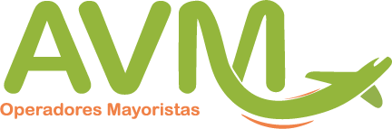

<title>Propuesta Plataforma AVM</title>
<link rel="preconnect" href="https://fonts.googleapis.com">
<link rel="preconnect" href="https://fonts.gstatic.com" crossorigin>
<link rel="stylesheet" href="https://fonts.googleapis.com/css2?family=Outfit:wght@300;500;700&family=Hanken+Grotesk:wght@400;500;600;700&family=JetBrains+Mono:wght@500;700&display=swap">
<style>
/* Layout: documento de propuesta escaneable; resumen arriba, cada proyecto con su alcance, horas y cronograma por mes */
:root {
  --paper: #F6F7F2; --card: #FFFFFF; --ink: #161B1F; --muted: #5B6560; --line: #DCE0D6; --soft: #ECEFE4;
  --signal: #BBCF26; --signal-ink: #1F2508; --signal-text: #5E6B05; --todo: #9A6A12; --ok: #2F7D4F; --danger: #B4372B;
  --f-display: "Outfit", "Segoe UI", system-ui, sans-serif;
  --f-body: "Hanken Grotesk", "Segoe UI", system-ui, sans-serif;
  --f-mono: "JetBrains Mono", ui-monospace, Consolas, monospace;
  --logo-c: block; --logo-w: none;
}
@media (prefers-color-scheme: dark) {
  :root:not([data-theme="light"]) {
    --paper: #111518; --card: #182024; --ink: #EEF1EA; --muted: #A2ACA6; --line: #2C353A; --soft: #20292D;
    --signal-text: #C9DB4A; --todo: #E2A94A; --ok: #5CC48A; --danger: #E06A5C; --logo-c: none; --logo-w: block; color-scheme: dark;
  }
}
:root[data-theme="dark"] {
  --paper: #111518; --card: #182024; --ink: #EEF1EA; --muted: #A2ACA6; --line: #2C353A; --soft: #20292D;
  --signal-text: #C9DB4A; --todo: #E2A94A; --ok: #5CC48A; --danger: #E06A5C; --logo-c: none; --logo-w: block; color-scheme: dark;
}
* { box-sizing: border-box }
body { background: var(--paper); color: var(--ink); font: 400 16px/1.55 var(--f-body); padding-inline: 16px; padding-block: 0 56px }
.doc { max-width: 980px; margin: 0 auto }
h1, h2, h3 { font-family: var(--f-display); text-wrap: balance; margin: 0 }
h2 { font-weight: 300; font-size: clamp(24px, 3vw, 32px); line-height: 1.1; letter-spacing: -.02em }
h2 strong { font-weight: 700 }
h3 { font-weight: 500; font-size: 17px; line-height: 1.3 }
p { margin: 0 }
ul { margin: 0; padding: 0; list-style: none }
.eyebrow { font: 700 11px/1 var(--f-mono); letter-spacing: .14em; text-transform: uppercase; color: var(--signal-text) }
section { padding-block: 44px 0; display: grid; gap: 16px }
.card { border: 1px solid var(--line); background: var(--card); border-radius: 16px; padding: 18px 20px; display: grid; gap: 10px; align-content: start; min-width: 0 }
.note { font-size: 14.5px; color: var(--muted); max-width: 78ch }
.note b { color: var(--ink) }
.num { font-variant-numeric: tabular-nums }

/* Portada */
.cover { padding-block: 36px 32px; display: grid; gap: 20px; border-bottom: 1px solid var(--line) }
.brandrow { display: flex; justify-content: space-between; align-items: center; gap: 12px; flex-wrap: wrap }
.brandrow img { height: 40px; width: auto }
.logo-c { display: var(--logo-c) } .logo-w { display: var(--logo-w) }
.meta { font: 500 12.5px/1.4 var(--f-mono); color: var(--muted) }
.cover h1 { font-weight: 300; font-size: clamp(32px, 5.4vw, 54px); line-height: 1.04; letter-spacing: -.03em; max-width: 20ch }
.cover h1 strong { font-weight: 700; background: linear-gradient(transparent 62%, color-mix(in srgb, var(--signal) 70%, transparent) 62%) }
.lead { font-size: 17px; max-width: 70ch; color: var(--muted) }
.lead b { color: var(--ink) }

/* Resumen de escenarios */
.scen { display: grid; grid-template-columns: repeat(2, minmax(0, 1fr)); gap: 12px }
.scen .card h3 { font-size: 19px }
.scen dl { margin: 0; display: grid; grid-template-columns: auto minmax(0, 1fr); gap: 6px 14px; font-size: 14.5px }
.scen dt { font: 700 11px/1.7 var(--f-mono); letter-spacing: .06em; text-transform: uppercase; color: var(--muted) }
.scen dd { margin: 0; font-weight: 600 }
.scen .rec { border-color: var(--signal); box-shadow: 0 0 0 1px var(--signal) inset }
.tag { font: 700 10.5px/1 var(--f-mono); letter-spacing: .08em; text-transform: uppercase; padding: 5px 7px; border-radius: 6px; background: var(--soft); color: var(--muted); justify-self: start }
.tag.on { background: var(--signal); color: var(--signal-ink) }

/* Alcance */
.scope { display: grid; grid-template-columns: repeat(3, minmax(0, 1fr)); gap: 16px 12px }
.scope li { border-top: 3px solid var(--signal); padding-top: 12px; display: grid; gap: 4px; align-content: start }
.scope li > span { color: var(--muted); font-size: 14.5px }
.done { font: 700 10px/1 var(--f-mono); letter-spacing: .08em; text-transform: uppercase; color: var(--ok); margin-left: 6px; white-space: nowrap }
.paths { display: grid; grid-template-columns: repeat(2, minmax(0, 1fr)); gap: 12px }
.path .top { display: flex; justify-content: space-between; align-items: center; gap: 10px; flex-wrap: wrap }
.letter { font: 700 13px/1 var(--f-mono); width: 28px; height: 28px; border-radius: 8px; display: grid; place-items: center; background: var(--soft) }
.path ul { display: grid; gap: 6px; font-size: 14.5px }
.path li, .bul li { display: grid; grid-template-columns: 14px minmax(0, 1fr); gap: 8px }
.path li::before, .bul li::before { content: ""; width: 6px; height: 6px; margin-top: 9px; border-radius: 50%; background: var(--signal) }
.path .foot { font-size: 13.5px; color: var(--muted); padding-top: 10px; border-top: 1px dashed var(--line) }
.path .foot b { color: var(--ink) }
.bul { display: grid; gap: 6px; font-size: 15px }

/* Horas */
.hrs-wrap { overflow-x: auto; border: 1px solid var(--line); border-radius: 16px; background: var(--card) }
.hrs { width: 100%; border-collapse: collapse; font-size: 14.5px; min-width: 560px }
.hrs th { text-align: left; font: 700 11px/1.3 var(--f-mono); letter-spacing: .06em; text-transform: uppercase; color: var(--muted); padding: 12px 14px; border-bottom: 1px solid var(--line) }
.hrs td { padding: 9px 14px; border-top: 1px solid var(--line); vertical-align: top }
.hrs td.h { text-align: right; font-variant-numeric: tabular-nums; white-space: nowrap; font-weight: 600 }
.hrs th.h { text-align: right }
.hrs td small { display: block; color: var(--muted); font-size: 13px }
.hrs tr.sub td { background: var(--soft); font-weight: 700 }
.hrs tr.tot td { background: color-mix(in srgb, var(--signal) 22%, var(--card)); font-weight: 700 }

/* Cronograma por mes */
.gantt-wrap { overflow-x: auto; border: 1px solid var(--line); border-radius: 16px; background: var(--card) }
.gantt { display: grid; min-width: 760px; font-size: 14px }
.gantt > div { padding: 9px 6px; border-top: 1px solid var(--line); min-width: 0 }
.gantt .hd { border-top: 0; font: 700 11px/1.25 var(--f-mono); color: var(--muted); text-align: center; text-transform: uppercase }
.gantt .hd.wk { text-align: left; padding-left: 14px }
.gantt .task { padding-left: 14px; font-weight: 600 }
.gantt .task small { display: block; font-weight: 400; color: var(--muted); font-size: 12.5px }
.gantt .cell { position: relative }
.gantt .bar { position: absolute; left: 0; right: 0; top: 50%; height: 20px; transform: translateY(-50%); background: var(--signal) }
.gantt .bar.s { border-radius: 6px 0 0 6px; left: 3px }
.gantt .bar.e { border-radius: 0 6px 6px 0; right: 3px }
.gantt .bar.s.e { border-radius: 6px }
.gantt .bar.gate { background: var(--ink) }
.gantt .bar.off { background: repeating-linear-gradient(45deg, var(--line) 0 4px, transparent 4px 8px) }
.dates { display: grid; grid-template-columns: repeat(4, minmax(0, 1fr)); gap: 12px }
.dates li { padding: 14px 16px; border-radius: 14px; background: var(--soft); display: grid; gap: 2px }
.dates time { font: 700 12px/1 var(--f-mono); color: var(--signal-text); letter-spacing: .06em; text-transform: uppercase }
.dates b { font: 500 15.5px/1.3 var(--f-display) }

/* Inversión */
.inv-wrap { overflow-x: auto; border: 1px solid var(--line); border-radius: 16px; background: var(--card) }
.inv { width: 100%; border-collapse: collapse; font-size: 15px; min-width: 620px }
.inv th { text-align: left; font: 700 11px/1.3 var(--f-mono); letter-spacing: .06em; text-transform: uppercase; color: var(--muted); padding: 12px 14px; border-bottom: 1px solid var(--line) }
.inv td { padding: 12px 14px; border-top: 1px solid var(--line); font-variant-numeric: tabular-nums }
.inv td.r, .inv th.r { text-align: right }
.inv tr.rec td { background: color-mix(in srgb, var(--signal) 18%, var(--card)) }
.price .amount { font: 700 clamp(30px, 4vw, 40px)/1 var(--f-display); letter-spacing: -.02em; font-variant-numeric: tabular-nums }
.price .amount span { font: 500 16px/1 var(--f-body); color: var(--muted); letter-spacing: 0 }

/* Riesgos y requisitos */
.two { display: grid; grid-template-columns: repeat(2, minmax(0, 1fr)); gap: 12px }
.risk { display: grid; gap: 10px }
.risk li { display: grid; gap: 2px; font-size: 14.5px; padding-left: 14px; border-left: 3px solid var(--todo) }
.risk li b { font-weight: 600 }
.risk li span { color: var(--muted) }
.dec { counter-reset: d; display: grid; gap: 10px }
.dec li { counter-increment: d; display: grid; grid-template-columns: 28px minmax(0, 1fr); gap: 10px; font-size: 15px }
.dec li::before { content: counter(d); font: 700 12px/1 var(--f-mono); width: 24px; height: 24px; border-radius: 7px; display: grid; place-items: center; background: var(--ink); color: var(--paper) }
.dec li small { display: block; color: var(--muted); font-size: 13px }
.out { font-size: 14.5px; color: var(--muted); padding: 14px 18px; border-radius: 14px; border: 1px dashed var(--line) }
.out b { color: var(--ink) }

/* Firmas */
.terms { margin: 0; padding-left: 20px; display: grid; gap: 6px; font-size: 15px; max-width: 76ch }
.signs { display: grid; grid-template-columns: repeat(2, minmax(0, 1fr)); gap: 40px; margin-top: 48px }
.sign { display: grid; gap: 8px; font-size: 14px; color: var(--muted) }
.sign .sline { display: block; border-top: 1.5px solid var(--ink); margin-bottom: 4px }
.sign b { font: 600 15px/1.3 var(--f-display); color: var(--ink) }
.sign strong { color: var(--ink); font-weight: 600; margin-left: 4px }
.sign span:not(.sline) { padding-bottom: 6px; border-bottom: 1px solid var(--line) }

@media (max-width: 760px) {
  .scen, .paths, .two, .signs { grid-template-columns: 1fr }
  .scope { grid-template-columns: 1fr 1fr }
  .dates { grid-template-columns: 1fr 1fr }
}
@media (max-width: 460px) { .scope, .dates { grid-template-columns: 1fr } }

/* Plan semanal */
.plan-wrap { overflow-x: auto; border: 1px solid var(--line); border-radius: 16px; background: var(--card) }
.plan { width: 100%; border-collapse: collapse; font-size: 14.5px; min-width: 600px }
.plan th { text-align: left; font: 700 11px/1.3 var(--f-mono); letter-spacing: .06em; text-transform: uppercase; color: var(--muted); padding: 12px 14px; border-bottom: 1px solid var(--line) }
.plan td { padding: 8px 14px; border-top: 1px solid var(--line); vertical-align: top }
.plan td.w { font: 700 12px/1.5 var(--f-mono); color: var(--muted); white-space: nowrap; font-variant-numeric: tabular-nums; width: 1% }
.plan td.d { font: 500 12.5px/1.5 var(--f-mono); color: var(--muted); white-space: nowrap; font-variant-numeric: tabular-nums; width: 1% }
.plan tr.fase td { background: var(--soft); font: 600 15px/1.3 var(--f-display); color: var(--ink); padding-top: 12px; padding-bottom: 12px }
.plan tr.fase td small { font: 500 12px/1 var(--f-mono); color: var(--muted); margin-left: 8px }
.plan tr.hito td { background: color-mix(in srgb, var(--signal) 22%, var(--card)); font-weight: 700 }
.plan tr.off td { color: var(--muted); font-style: italic }
.cols { display: grid; grid-template-columns: repeat(2, minmax(0, 1fr)); gap: 12px }
.cols .card ul { display: grid; gap: 7px; font-size: 14.5px }
.cols .card li { display: grid; grid-template-columns: 14px minmax(0, 1fr); gap: 8px }
.cols .card li::before { content: ""; width: 6px; height: 6px; margin-top: 9px; border-radius: 50%; background: var(--signal) }
.cols .card li b { font-weight: 600 }
.cols .card .tag { justify-self: start }
@media (max-width: 760px) { .cols { grid-template-columns: 1fr } }
</style>

<main class="doc">

  <header class="cover">
    <div class="brandrow">
      <span></span>
      <span class="meta">Propuesta · 9 nov 2026</span>
    </div>
    <h1>Plataforma de AVM: <strong>portal B2B para agencias y sitio B2C para viajeros</strong></h1>
    <p class="lead">Una sola plataforma con los proveedores con los que AVM tiene negociación: TBO, World2Meet y Omnibees. Primero el portal B2B, porque construye los conectores que después usa el B2C. El sitio B2C, que ya está avanzado, sale a producción en la primera semana cotizando y se completa al final con reserva y pago.</p>
  </header>

  <section id="alcance">
    <span class="eyebrow">Qué se entrega</span>
    <h2>Dos portales, <strong>un solo backoffice</strong></h2>
    <div class="cols">
      <div class="card">
        <span class="tag on">B2B · agencias</span>
        <ul>
          <li><span><b>Agencias:</b> registro con RNT y NIT, aprobación de AVM, usuarios y roles.</span></li>
          <li><span><b>Proveedores:</b> hoteles y actividades de TBO, hoteles y traslados de World2Meet, hoteles de Omnibees, vuelos y asistencia médica.</span></li>
          <li><span><b>Un solo catálogo:</b> cada hotel sale una vez, con el mejor precio entre proveedores.</span></li>
          <li><span><b>Precios por agencia:</b> markup y comisión por agencia, grupo, producto y proveedor.</span></li>
          <li><span><b>Crédito de AVM:</b> cupo o saldo prepagado, estado de cuenta, abonos y bloqueo por mora.</span></li>
          <li><span><b>Pago con tarjeta, PSE y Nequi</b> para las agencias que no usan crédito.</span></li>
          <li><span><b>Expedientes:</b> varios servicios en un mismo viaje.</span></li>
          <li><span><b>Cotizaciones y vouchers modernos:</b> cotización con enlace, PDF y WhatsApp, con la marca de la agencia; un voucher por viaje, con QR.</span></li>
          <li><span><b>Operación:</b> reservas, cancelaciones, reportes y conciliación con proveedores.</span></li>
        </ul>
      </div>
      <div class="card">
        <span class="tag on">B2C · viajeros</span>
        <ul>
          <li><span><b>Buscador</b> con los mismos proveedores, más los tarifarios propios de AVM. LiteAPI, ya conectado, sigue como proveedor adicional.</span></li>
          <li><span><b>Reserva y pago en el sitio</b> con tarjeta, PSE y Nequi.</span></li>
          <li><span><b>Cuentas del viajero:</b> sus reservas y sus cotizaciones.</span></li>
          <li><span><b>Asistencia médica y traslados propios</b> dentro de la compra.</span></li>
          <li><span><b>Cotizaciones y vouchers modernos</b> para el viajero.</span></li>
          <li><span><b>Backoffice:</b> diseño, banners, markup y fees, producto y tarifarios propios, desglose de cada venta.</span></li>
          <li><span><b>SEO</b> por destino y hotel, <b>Google Analytics 4</b> y conversiones de <b>Google Ads</b>.</span></li>
          <li><span><b>Automatizaciones:</b> recaptura de búsquedas y cotizaciones sin compra, y campañas.</span></li>
        </ul>
      </div>
    </div>
  </section>

  <section id="plan">
    <span class="eyebrow">Plan de trabajo</span>
    <h2>Semana a semana · <strong>58 semanas de 20 horas</strong></h2>
    <ul class="dates">
      <li><time>Vie 13 nov 2026</time><b>Plataforma actual en producción</b></li>
      <li><time>Vie 19 feb 2027</time><b>TBO conectado</b></li>
      <li><time>Vie 1 oct 2027</time><b>Portal B2B en producción</b></li>
      <li><time>Vie 7 ene 2028</time><b>Sitio B2C completo</b></li>
    </ul>
    <div class="plan-wrap">
      <table class="plan">
        <thead><tr><th>Sem.</th><th>Fechas</th><th>Qué se entrega</th></tr></thead>
        <tbody>
<tr class="fase"><td colspan="3">Fase 1 · Puesta en marcha y base del portal B2B<small>9 nov 2026 – 8 ene 2027 · 7 semanas</small></td></tr>
<tr><td class="w">S01</td><td class="d">9 nov – 13 nov</td><td>Salida a producción de la plataforma actual en el servidor de AVM. El sitio B2C sigue cotizando mientras se construye el resto.</td></tr>
<tr><td class="w">S02</td><td class="d">16 nov – 20 nov</td><td>Registro de agencias con RNT y NIT, y aprobación de AVM.</td></tr>
<tr><td class="w">S03</td><td class="d">23 nov – 27 nov</td><td>Usuarios por agencia con roles (administrador y asesor) e ingreso al portal.</td></tr>
<tr><td class="w">S04</td><td class="d">30 nov – 4 dic</td><td>Precios por agencia: markup y comisión por agencia, grupo, producto y proveedor.</td></tr>
<tr><td class="w">S05</td><td class="d">7 dic – 11 dic</td><td>Expedientes: un viaje con varios servicios, pasajeros y estados.</td></tr>
<tr><td class="w">S06</td><td class="d">14 dic – 18 dic</td><td>Cotización moderna (1/2): diseño, enlace para compartir, PDF y envío por WhatsApp y correo.</td></tr>
<tr class="off"><td class="w">–</td><td class="d">21 dic – 1 ene</td><td>Descanso de fin de año</td></tr>
<tr><td class="w">S07</td><td class="d">4 ene – 8 ene</td><td>Cotización moderna (2/2): con la marca de cada agencia, para que la envíe a su cliente.</td></tr>
<tr class="fase"><td colspan="3">Fase 2 · Conector TBO<small>11 ene 2027 – 19 feb 2027 · 6 semanas</small></td></tr>
<tr><td class="w">S08</td><td class="d">11 ene – 15 ene</td><td>TBO: conexión, destinos y catálogo de hoteles.</td></tr>
<tr><td class="w">S09</td><td class="d">18 ene – 22 ene</td><td>TBO: búsqueda y precios de hoteles en el portal.</td></tr>
<tr><td class="w">S10</td><td class="d">25 ene – 29 ene</td><td>TBO: verificación de precio, políticas de cancelación y reserva.</td></tr>
<tr><td class="w">S11</td><td class="d">1 feb – 5 feb</td><td>TBO: cancelación, voucher del proveedor y registro en el expediente.</td></tr>
<tr><td class="w">S12</td><td class="d">8 feb – 12 feb</td><td>TBO: actividades (búsqueda, precio y reserva).</td></tr>
<tr><td class="w">S13</td><td class="d">15 feb – 19 feb</td><td>TBO: pruebas de certificación, correcciones y solicitud de producción.</td></tr>
<tr class="fase"><td colspan="3">Fase 3 · Conector World2Meet<small>22 feb 2027 – 19 mar 2027 · 4 semanas</small></td></tr>
<tr><td class="w">S14</td><td class="d">22 feb – 26 feb</td><td>World2Meet: conexión y catálogo de hoteles.</td></tr>
<tr><td class="w">S15</td><td class="d">1 mar – 5 mar</td><td>World2Meet: búsqueda, precios y reserva de hoteles.</td></tr>
<tr><td class="w">S16</td><td class="d">8 mar – 12 mar</td><td>World2Meet: traslados (búsqueda, precio y reserva) y cancelaciones.</td></tr>
<tr><td class="w">S17</td><td class="d">15 mar – 19 mar</td><td>World2Meet: certificación y correcciones.</td></tr>
<tr class="fase"><td colspan="3">Fase 4 · Conector Omnibees<small>22 mar 2027 – 16 abr 2027 · 4 semanas</small></td></tr>
<tr><td class="w">S18</td><td class="d">22 mar – 26 mar</td><td>Omnibees: conexión, hoteles disponibles y tarifas.</td></tr>
<tr><td class="w">S19</td><td class="d">29 mar – 2 abr</td><td>Omnibees: reserva, modificación y cancelación.</td></tr>
<tr><td class="w">S20</td><td class="d">5 abr – 9 abr</td><td>Omnibees: pruebas con hoteles reales y correcciones.</td></tr>
<tr><td class="w">S21</td><td class="d">12 abr – 16 abr</td><td>Omnibees: certificación y salida a producción del conector.</td></tr>
<tr class="fase"><td colspan="3">Fase 5 · Un solo catálogo de hoteles<small>19 abr 2027 – 7 may 2027 · 3 semanas</small></td></tr>
<tr><td class="w">S22</td><td class="d">19 abr – 23 abr</td><td>Un mismo hotel de varios proveedores se reconoce y sale una sola vez.</td></tr>
<tr><td class="w">S23</td><td class="d">26 abr – 30 abr</td><td>Mejor precio entre proveedores y prioridad por proveedor.</td></tr>
<tr><td class="w">S24</td><td class="d">3 may – 7 may</td><td>Contenido: fotos, descripción y servicios del mejor proveedor para cada hotel.</td></tr>
<tr class="fase"><td colspan="3">Fase 6 · Crédito de AVM y pagos<small>10 may 2027 – 11 jun 2027 · 5 semanas</small></td></tr>
<tr><td class="w">S25</td><td class="d">10 may – 14 may</td><td>Crédito: cupo y saldo prepagado por agencia, y movimientos.</td></tr>
<tr><td class="w">S26</td><td class="d">17 may – 21 may</td><td>Crédito: estado de cuenta, abonos y conciliación de pagos de las agencias.</td></tr>
<tr><td class="w">S27</td><td class="d">24 may – 28 may</td><td>Crédito: alertas de cupo, bloqueo por mora y reservas contra el cupo.</td></tr>
<tr><td class="w">S28</td><td class="d">31 may – 4 jun</td><td>Pasarela de pagos: tarjeta, PSE y Nequi, con confirmación automática.</td></tr>
<tr><td class="w">S29</td><td class="d">7 jun – 11 jun</td><td>Pasarela: reembolsos, comisiones y conciliación con la pasarela.</td></tr>
<tr class="fase"><td colspan="3">Fase 7 · Reservas y vouchers<small>14 jun 2027 – 9 jul 2027 · 4 semanas</small></td></tr>
<tr><td class="w">S30</td><td class="d">14 jun – 18 jun</td><td>Reserva de un expediente con varios proveedores en un solo paso.</td></tr>
<tr><td class="w">S31</td><td class="d">21 jun – 25 jun</td><td>Voucher de reserva moderno: uno por viaje, con código QR y los datos de cada servicio.</td></tr>
<tr><td class="w">S32</td><td class="d">28 jun – 2 jul</td><td>Correos de confirmación, cambio y cancelación para la agencia y el viajero.</td></tr>
<tr><td class="w">S33</td><td class="d">5 jul – 9 jul</td><td>Cancelaciones y penalidades en el portal y en el backoffice.</td></tr>
<tr class="fase"><td colspan="3">Fase 8 · Vuelos y asistencia médica<small>12 jul 2027 – 6 ago 2027 · 4 semanas</small></td></tr>
<tr><td class="w">S34</td><td class="d">12 jul – 16 jul</td><td>Vuelos: búsqueda y precios con el proveedor aéreo que elija AVM.</td></tr>
<tr><td class="w">S35</td><td class="d">19 jul – 23 jul</td><td>Vuelos: datos de pasajeros, reserva y emisión.</td></tr>
<tr><td class="w">S36</td><td class="d">26 jul – 30 jul</td><td>Asistencia médica: planes y precios por API del proveedor.</td></tr>
<tr><td class="w">S37</td><td class="d">2 ago – 6 ago</td><td>Asistencia médica: emisión dentro del expediente y en el voucher.</td></tr>
<tr class="fase"><td colspan="3">Fase 9 · Operación de AVM<small>9 ago 2027 – 27 ago 2027 · 3 semanas</small></td></tr>
<tr><td class="w">S38</td><td class="d">9 ago – 13 ago</td><td>Backoffice de reservas: búsqueda, estados y gestión por agencia.</td></tr>
<tr><td class="w">S39</td><td class="d">16 ago – 20 ago</td><td>Reportes de ventas por agencia, proveedor y producto.</td></tr>
<tr><td class="w">S40</td><td class="d">23 ago – 27 ago</td><td>Conciliación con proveedores y control de lo pagado a cada uno.</td></tr>
<tr class="fase"><td colspan="3">Fase 10 · Pruebas y salida del B2B<small>30 ago 2027 – 8 oct 2027 · 6 semanas</small></td></tr>
<tr><td class="w">S41</td><td class="d">30 ago – 3 sep</td><td>Pruebas de punta a punta con agencias piloto (1/3).</td></tr>
<tr><td class="w">S42</td><td class="d">6 sep – 10 sep</td><td>Pruebas con agencias piloto (2/3) y correcciones.</td></tr>
<tr><td class="w">S43</td><td class="d">13 sep – 17 sep</td><td>Pruebas (3/3) y revisión de seguridad.</td></tr>
<tr><td class="w">S44</td><td class="d">20 sep – 24 sep</td><td>Capacitación del equipo de AVM y manual de uso.</td></tr>
<tr class="hito"><td class="w">S45</td><td class="d">27 sep – 1 oct</td><td>Salida a producción del portal B2B con las primeras agencias.</td></tr>
<tr><td class="w">S46</td><td class="d">4 oct – 8 oct</td><td>Acompañamiento a las agencias y ajustes.</td></tr>
<tr class="fase"><td colspan="3">Fase 11 · B2C completo sobre la misma plataforma<small>11 oct 2027 – 14 ene 2028 · 12 semanas</small></td></tr>
<tr><td class="w">S47</td><td class="d">11 oct – 15 oct</td><td>El buscador del viajero usa los proveedores conectados y los tarifarios propios.</td></tr>
<tr><td class="w">S48</td><td class="d">18 oct – 22 oct</td><td>Reserva y pago del viajero en el sitio.</td></tr>
<tr><td class="w">S49</td><td class="d">25 oct – 29 oct</td><td>Cuentas del viajero: registro, ingreso, sus reservas y sus cotizaciones.</td></tr>
<tr><td class="w">S50</td><td class="d">1 nov – 5 nov</td><td>Cotización y voucher modernos para el viajero.</td></tr>
<tr><td class="w">S51</td><td class="d">8 nov – 12 nov</td><td>Asistencia médica y traslados propios dentro de la compra.</td></tr>
<tr><td class="w">S52</td><td class="d">15 nov – 19 nov</td><td>Banners y diseño parametrizable en el backoffice.</td></tr>
<tr><td class="w">S53</td><td class="d">22 nov – 26 nov</td><td>SEO: páginas por destino y hotel con el contenido de los proveedores.</td></tr>
<tr><td class="w">S54</td><td class="d">29 nov – 3 dic</td><td>Google Analytics 4 y conversiones de Google Ads.</td></tr>
<tr><td class="w">S55</td><td class="d">6 dic – 10 dic</td><td>Automatizaciones: recaptura de búsquedas y cotizaciones sin compra.</td></tr>
<tr><td class="w">S56</td><td class="d">13 dic – 17 dic</td><td>Pruebas de punta a punta del B2C y revisión de seguridad.</td></tr>
<tr class="off"><td class="w">–</td><td class="d">20 dic – 31 dic</td><td>Descanso de fin de año</td></tr>
<tr class="hito"><td class="w">S57</td><td class="d">3 ene – 7 ene</td><td>Capacitación y salida a producción del B2C completo.</td></tr>
<tr><td class="w">S58</td><td class="d">10 ene – 14 ene</td><td>Acompañamiento y ajustes.</td></tr>
        </tbody>
      </table>
    </div>
    <p class="note">Cada semana son 20 horas de desarrollo. Cada fase ya incluye un margen para pruebas, festivos e imprevistos. Al final de cada fase AVM prueba lo entregado en el sitio de prueba.</p>
  </section>

  <section id="requisitos">
    <span class="eyebrow">Lo que mueve las fechas</span>
    <h2>Requisitos de AVM <strong>y riesgos</strong></h2>
    <div class="two">
      <div class="card">
        <h3>AVM entrega</h3>
        <ul class="dec">
          <li><span>Documentación y credenciales de prueba de cada proveedor<small>A nombre de AVM, antes de que empiece su fase: TBO antes del 4 de enero, World2Meet antes del 15 de febrero, Omnibees antes del 15 de marzo de 2027.</small></span></li>
          <li><span>Cuenta de pasarela de pagos aprobada<small>Wompi, PayU o ePayco, a nombre de AVM, antes de la fase 6.</small></span></li>
          <li><span>Proveedor aéreo y de asistencia médica con API<small>Contrato y credenciales antes de la fase 8.</small></span></li>
          <li><span>Términos de compra, cancelación y reembolso<small>Revisados por un abogado, antes de la salida del B2B.</small></span></li>
          <li><span>Una persona de AVM para probar<small>Unas 2 horas por semana, y 2 o 3 agencias piloto para la fase 10.</small></span></li>
        </ul>
      </div>
      <div class="card">
        <h3>Riesgos</h3>
        <ul class="risk">
          <li><b>Certificación de proveedores</b><span>Cada proveedor revisa la integración antes de abrir producción; puede tardar de 2 a 6 semanas. Mientras tanto se avanza con la fase siguiente.</span></li>
          <li><b>Un solo desarrollador</b><span>Una incapacidad o un imprevisto detiene el avance. El código queda en el repositorio de AVM, documentado.</span></li>
          <li><b>Cambios de alcance</b><span>Un proveedor o un producto nuevo suma sus semanas y se acuerda por escrito antes de empezarlo.</span></li>
        </ul>
      </div>
    </div>
    <p class="out"><b>Fuera de alcance:</b> facturación electrónica (DIAN), aplicación móvil, pauta y manejo de campañas, fotografía y textos de destinos, atención a clientes y a agencias, y la API de Travel Compositor.</p>
  </section>

  <section id="inversion">
    <span class="eyebrow">Inversión</span>
    <h2>14 meses · <strong>una mensualidad</strong></h2>
    <div class="card price">
      <span class="eyebrow">Mensualidad durante el desarrollo</span>
      <p class="amount">$4.500.000 <span>COP mensuales · 14 meses · total $63.000.000</span></p>
      <p class="note">Del 9 de noviembre de 2026 al 14 ene 2028. Cubre 20 horas semanales de desarrollo, pruebas, despliegues y reuniones de seguimiento.</p>
    </div>
    <p class="note"><b>Después de la salida a producción:</b> soporte y mantenimiento de $1.500.000 COP mensuales, hasta 15 horas: correcciones, actualizaciones, copias de seguridad y monitoreo del servidor.</p>
    <p class="note"><b>Costos de terceros, a nombre de AVM:</b> servidor (de 10 a 40 USD al mes), dominio, correos (Resend), comisiones de la pasarela por transacción, de los proveedores y de LiteAPI, y el presupuesto de pauta.</p>
  </section>

  <section id="firma">
    <span class="eyebrow">Aceptación</span>
    <h2>Firma de <strong>la propuesta</strong></h2>
    <ol class="terms">
      <li>Las partes aceptan el alcance, el plan de trabajo y lo que queda fuera de alcance, tal como están descritos en esta propuesta.</li>
      <li>Las fechas suponen 20 horas semanales de desarrollo y que AVM entrega a tiempo los requisitos. Un retraso en esas entregas corre las fechas en el mismo tiempo.</li>
      <li>La mensualidad se paga por mes vencido mientras dure el desarrollo. AVM puede detener el proyecto avisando con 30 días; lo construido hasta ese momento queda para AVM.</li>
      <li>El código, los datos y las cuentas de los servicios quedan a nombre de AVM.</li>
      <li>Cambios de alcance después de la firma se acuerdan por escrito, con su ajuste de tiempo y valor.</li>
    </ol>
    <div class="signs">
      <div class="sign"><span class="sline"></span><b>Por AVM Operadores Mayoristas</b><span>Nombre:</span><span>C.C. / NIT:</span><span>Fecha:</span></div>
      <div class="sign"><span class="sline"></span><b>Por el desarrollador</b><span>Nombre: <strong>Santiago Martínez</strong></span><span>C.C. / NIT: <strong>1.076.623.993</strong></span><span>Fecha: <strong>9 de noviembre de 2026</strong></span></div>
    </div>
  </section>

</main>
